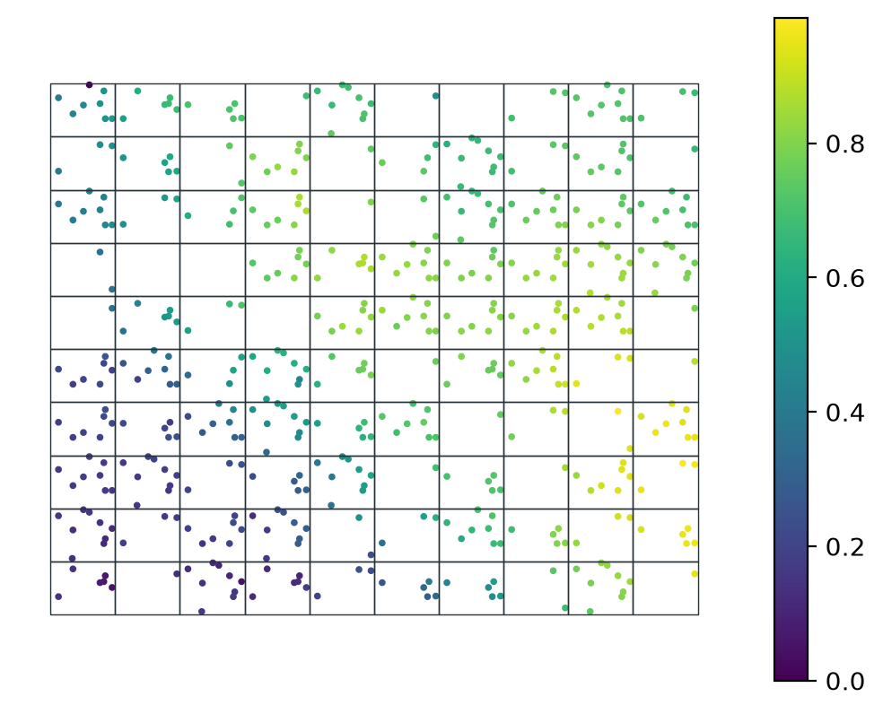
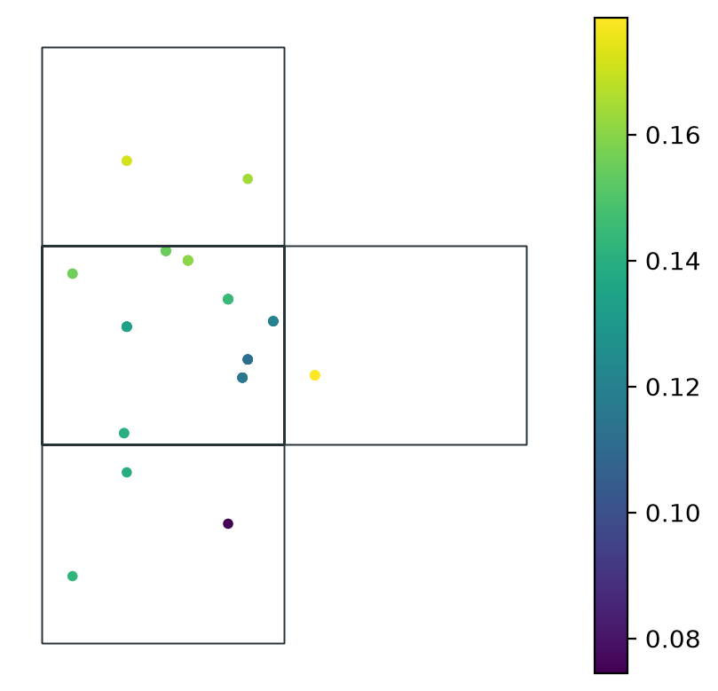

Variable
def Variable(
name:str, value:float
)->None:A named value that describes one area.
A State describes every area by a set of variables computed from the measurements collected so far. Each callback computes one variable, such as the highest value (MaxCB) or the number of measurements (CountCB). Calling a State runs every callback on every area and returns one row per loc_id. Optimizer ranks the areas from this table.
Base class for state callbacks. __call__(loc_id, o) returns a Variable, or a tuple of them, for area loc_id of State o.
def State(
measurements:geopandas.geodataframe.GeoDataFrame, # Measurements so far: a `value` column and `Point` geometries, indexed by `loc_id`
smp_areas:geopandas.geodataframe.GeoDataFrame, # Areas to describe, indexed by `loc_id`, such as the output of `gridder`
cbs:List[collections.abc.Callable], # Callbacks that compute the state variables
):State variables of each area, computed by callbacks from the measurements collected so far.
State variables of area loc_id.
State variables of every area in smp_areas.
def expand_to_k_nearest(
subset_measurements:geopandas.geodataframe.GeoDataFrame, # Measurements to expand, usually those of one area
k:int=5, # Number of nearest measurements to take for each point, counting the point itself
)->geopandas.geodataframe.GeoDataFrame: # `k` rows for each point of `subset_measurements`, duplicates included, with a default indexThe k measurements nearest to each point of subset_measurements, from any area.
Each callback below computes one variable per area. MaxCB, MinCB, StdCB, CountCB and MoranICB return NaN for an area without measurements. A missing count is therefore NaN, not 0. Optimizer.get_rank treats a missing value as the highest priority for its criterion.
To add a variable, subclass Callback and implement __call__(loc_id, o). Return a tuple of Variables to add several columns at once.
Highest measured value in the area. NaN if the area has no measurements.
Lowest measured value in the area. NaN if the area has no measurements.
Standard deviation of the measured values in the area. NaN if the area has no measurements.
Number of measurements in the area. NaN if the area has no measurements.
def MoranICB(
k:int=5, # Number of neighbours per point, used to expand the measurements and to build the spatial weights
p_threshold:float=0.05, # Significance level: Moran's I is `NaN` when its pseudo p-value `p_sim` is at or above it
name:str='Moran.I', # Name of the variable
min_n:int=5, # Areas with `min_n` measurements or fewer get `NaN`
):Moran’s I of the area’s measurements and their nearest neighbours. NaN if the area has too few measurements or Moran’s I is not significant.
Mean of fname_raster over the area, emulating prior knowledge such as an airborne survey. Computed for every area, measured or not.
The example emulates one campaign on a 10 by 10 grid. Each area gets between 0 and 9 points:

Create a State with the callbacks to compute, then call it to get one row per area. MoranICB tests significance with random permutations. Fixing NumPy’s global seed makes its results reproducible:
| Max | Min | Standard Deviation | Count | Moran.I | Prior | |
|---|---|---|---|---|---|---|
| loc_id | ||||||
| 0 | 0.142204 | 0.043098 | 0.038206 | 6.0 | 0.874200 | 0.102492 |
| 1 | 0.160292 | 0.111590 | 0.017177 | 9.0 | 0.623260 | 0.125727 |
| 2 | 0.177072 | 0.156276 | 0.007273 | 8.0 | 0.579608 | 0.161802 |
| 3 | 0.227234 | 0.181968 | 0.016882 | 7.0 | 0.788752 | 0.184432 |
| 4 | 0.257189 | 0.177842 | 0.023974 | 7.0 | 0.505154 | 0.201405 |
Areas without measurements have NaN for every variable except Prior:
| Max | Min | Standard Deviation | Count | Moran.I | Prior | |
|---|---|---|---|---|---|---|
| loc_id | ||||||
| 16 | NaN | NaN | NaN | NaN | NaN | 0.455841 |
| 26 | NaN | NaN | NaN | NaN | NaN | 0.597431 |
| 35 | NaN | NaN | NaN | NaN | NaN | 0.643783 |
| 69 | NaN | NaN | NaN | NaN | NaN | 0.544591 |
get computes the variables of one area:
[Variable(name='Max', value=np.float32(0.16029228)),
Variable(name='Min', value=np.float32(0.11158965)),
Variable(name='Standard Deviation', value=np.float32(0.017177373)),
Variable(name='Count', value=9),
Variable(name='Moran.I', value=np.float64(0.6232596338489773)),
Variable(name='Prior', value=np.float32(0.12572713))]Moran’s I measures spatial autocorrelation. It is close to 1 when nearby measurements have similar values, and close to 0 when values are spatially random. One area rarely has enough measurements to estimate it alone. MoranICB therefore adds the k nearest measurements of each point in the area, including those in neighbouring areas. expand_to_k_nearest does this expansion.
The plot shows the expanded measurements of the area with the most measurements, and the areas they come from:
loc_id = state_t0['Count'].idxmax()
subset = state.measurements.loc[[loc_id]]
expanded_pts = state.expand_to_k_nearest(subset, k=5)
test_eq(len(expanded_pts), 5 * len(subset))
ax = expanded_pts.plot(column='value', s=10, legend=True)
gpd.sjoin(gdf_grid, expanded_pts, how="inner", predicate='contains').boundary.plot(color=black, lw=0.5, ax=ax)
ax.axis('off');